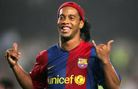

Welcome!
Welcome to my my Web page!. My name is Pedro Correa and this site contatins lots of useful information about me, my family, and my Web page creations.
My Hobbies
- Working on cars
- Going on hikes
- Working out
- Playing soccer
These are just some of the few hobbies I enjoy to do on a daily. I love to work on cars be my own or friends. It is also fun to go find new hiking trail and to be able to explore what nature has. As of last 2 years working out has become a great part of my life. I love the benefits that come from working out frequently. Lastly on this list is playing soccer. It is one of the greatest sports of all time. So powerful it brings the world together and stops conflicts.
Fun Facts
- I play Pokemon
- I am a big Adele fan
- I will never deny pizza
Most tell me I am too old to be playing Pokemon. However for me its a great past time. I have been playing the game since it released in the United States. Also for most people that know me usually hear me listening to rap or r&b. Which gives people a laugh when Adele joins into my playlist of music. I like pizza so much that I will eat if even if I am not hungry. Most people do not enjoy cafeteria food but to me that pizza there is good in my book.
My Idol
Ronaldinho!
One of the greatest soccer players to have ever played the game. One of the main reasons he is recognized is for his attitude and smile. He showed the world how to always enjoy the beautiful game we call soccer. Myself like many others watched this man play and not see a game but an art. Poetry in motion. How he played showed me to be upset about missing a shot or not blocking the ball. He stands as one of the greatest players of all time, along side of Pele and Maradona.